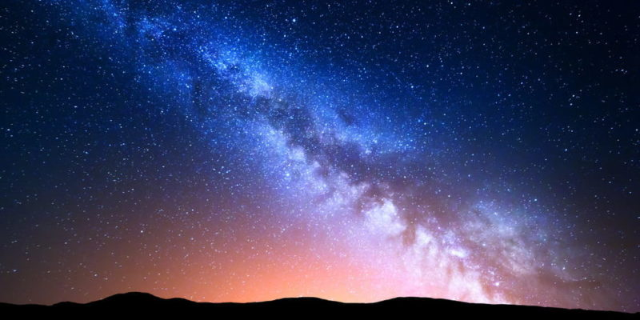
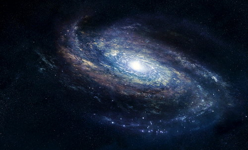
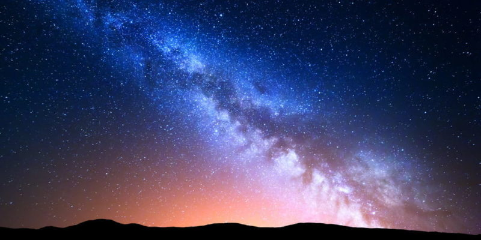
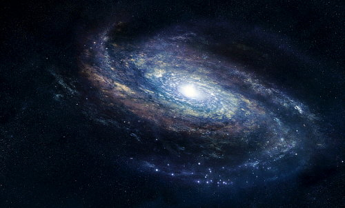

Una galaxia es una estructura astronómica que agrupa conjuntos de estrellas (en sus respectivos sistemas solares) y materia interestelar como gases, campos de asteroides, etc., en un mismo sistema astronómico más o menos definido. Es decir, que la galaxia es un conjunto de estrellas y sistemas planetarios que orbitan en torno a un centro o eje definido.
 



Nuestro sistema planetario forma parte de una galaxia que llamamos “Vía láctea”. Está ubicado en una de sus regiones exteriores y alejadas del centro.
Las galaxias son estructuras inmensas, como se comprenderá, que varían enormemente en forma, tamaño y composición, pero que están entre los objetos más brillantes observables con ayuda de telescopios especializados.
Se estima que las galaxias están compuestas en un 90% de materia oscura, aunque no se comprobó la existencia de esta última. Aunque poseen formas distintas de organización, en su gran mayoría las galaxias son discos planos de materia en movimiento en el espacio.
Se estima, según observaciones del telescopio Hubble de 2016, que existen por lo menos 2 mil millones (2.000.000.000) de galaxias en el universo observable, casi diez veces más de lo que se pensaba antiguamente.